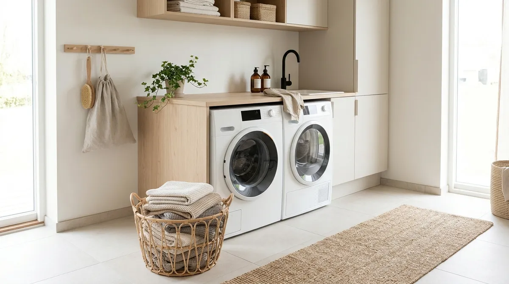

Hvad koster en vask og en tørring i strøm?
En vask koster et par kroner i strøm. Tørretumbleren kan koste tre gange så meget, hvis den er gammel. Her er priserne efter energimærke.
Emil Rostgaard Clausen, stifter og redaktør

Det korte svar: En vask i en ny maskine med energimærke A bruger 0,46 kWh og koster ca. 1,24 kr. i strøm. En tørring i en A+++ tørretumbler bruger 1,0 kWh og koster ca. 2,70 kr. En ældre tørretumbler med mærke B bruger 3,2 kWh og koster ca. 8,64 kr. pr. gang.
Hvad koster en vask?
Forbruget afhænger mest af maskinens energimærke og af temperaturen. Tallene her er for en maskine til 7 kg og kommer fra Bolius.
| Energimærke | Forbrug pr. vask | Pris pr. vask | Pris om året (208 vaske) |
|---|---|---|---|
| A (nyt mærke) | 0,46 kWh | 1,24 kr. | 258 kr. |
| B (nyt mærke) | 0,55 kWh | 1,49 kr. | 309 kr. |
| C (nyt mærke) | 0,65 kWh | 1,76 kr. | 365 kr. |
| A+++ (gammelt mærke) | 0,80 kWh | 2,16 kr. | 449 kr. |
| A+ (gammelt mærke) | 1,02 kWh | 2,75 kr. | 573 kr. |
Vi regner med 2,70 kr. pr. kWh i alt, inkl. nettarif, afgifter og moms. Det ligger mellem vores beregning for Vestdanmark (2,64 kr.) og Østdanmark (2,85 kr.) pr. 20. november 2026. Se hvad en kWh koster hos dig.
208 vaske om året svarer til fire vaske om ugen. Dertil kommer vand og vaskemiddel.
Hvad koster vask og tørring tilsammen om året?
Her er to typiske husstande med 208 vaske og 160 tørringer om året.
| Udstyr | Forbrug om året | Pris om året |
|---|---|---|
| Ny vaskemaskine (A) og A+++ tørretumbler | 256 kWh | 690 kr. |
| Ældre vaskemaskine (A+) og B-mærket tørretumbler | 724 kWh | 1.955 kr. |
Forskellen er ca. 1.265 kr. om året. Det meste af den ligger i tørretumbleren.
Hvad koster en tur i tørretumbleren?
Tørretumbleren bruger mere strøm end vaskemaskinen. Her er der stor forskel på nye og gamle maskiner.
| Energimærke | Forbrug pr. tørring | Pris pr. tørring | Pris om året (160 tørringer) |
|---|---|---|---|
| A+++ | 1,0 kWh | 2,70 kr. | 432 kr. |
| A++ | 1,3 kWh | 3,51 kr. | 562 kr. |
| A+ | 1,7 kWh | 4,59 kr. | 734 kr. |
| A | 2,7 kWh | 7,29 kr. | 1.166 kr. |
| B | 3,2 kWh | 8,64 kr. | 1.382 kr. |
SparEnergi regner med 160 tørringer om året for en gennemsnitsfamilie. Forskellen mellem en A+++ og en B-mærket tørretumbler er dermed ca. 950 kr. om året.
Kan det betale sig at vaske om natten?
Ja, hvis du har en elaftale, der følger timeprisen. Både selve strømmen og nettariffen er billigst om natten og dyrest mellem kl. 17 og 21. En vask og en tørring bruger tilsammen omkring 1,5 kWh, så hver øre i forskel pr. kWh giver 1,5 øre pr. gang.
Se hvornår strømmen er billigst i gennemsnit, dagens billigste timer og nettariffen hos dit netselskab. Brug maskinens udskudte start, så den kører, mens du sover. Lad ikke en tørretumbler køre uden opsyn, hvis den er gammel eller har et fyldt fnugfilter.
Fem råd, der gør tøjvasken billigere
- Vask ved 30 grader, når tøjet ikke er meget snavset.
- Fyld maskinen helt op.
- Brug maskinens eco-program. Det tager længere tid, men bruger mindre strøm.
- Centrifugér ved høj hastighed, før tøjet skal i tørretumbleren.
- Hæng tøjet på tørrestativ, når du kan. Det er gratis.
Beregn selv
Skriv dine egne tal, så regner vi prisen ud.
Den nemmeste besparelse er ofte selve elaftalen. Der er over 1.300 kr. om året til forskel på den billigste og den dyreste elaftale ved et forbrug på 4.000 kWh. Se det billigste elselskab lige nu, eller få regnet din egen besparelse ud.
Spørgsmål og svar
Hvor meget strøm bruger en vaskemaskine pr. vask?
En ny vaskemaskine med energimærke A bruger ca. 0,46 kWh pr. vask. En ældre A+ maskine bruger ca. 1 kWh.
Hvad bruger mest strøm: vaskemaskine eller tørretumbler?
Tørretumbleren. En A+++ tørretumbler bruger 1,0 kWh pr. tørring, mens en ny vaskemaskine bruger omkring det halve pr. vask.
Hvornår er det billigst at vaske tøj?
Om natten og midt på dagen i weekenden er strømmen typisk billigst. Mellem kl. 17 og 21 er den dyrest. Det gælder kun, hvis din elaftale følger timeprisen.
Kilder
- Bolius: Hvad koster det at bruge en vaskemaskine? (forbrug pr. vask efter energimærke)
- Bolius: Hvad koster det at bruge en tørretumbler? (forbrug pr. tørring, tal fra SparEnergi.dk)
Priserne er regnet 21. november 2026 og ændrer sig med elprisen. Tallene for forbrug kommer fra kilderne ovenfor.